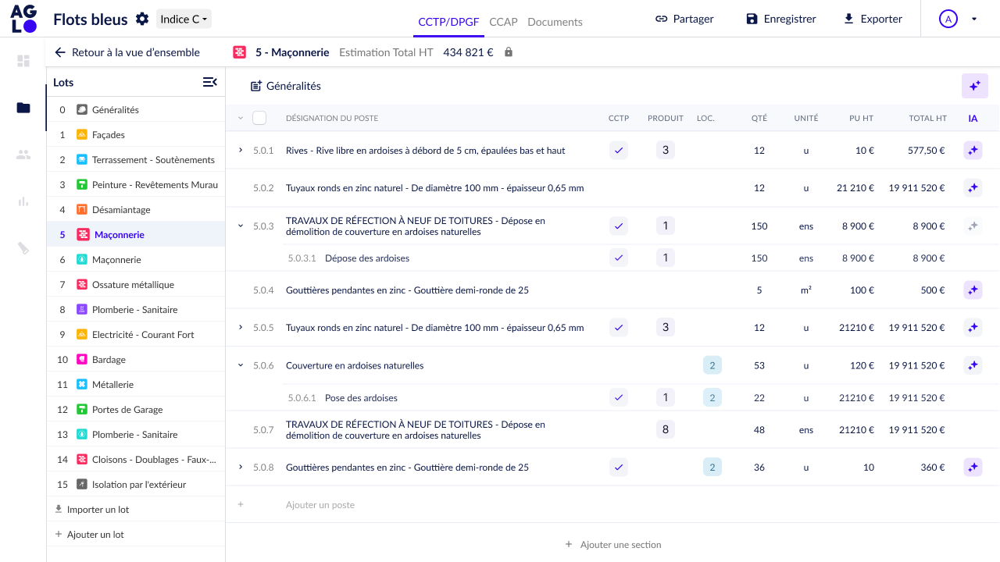
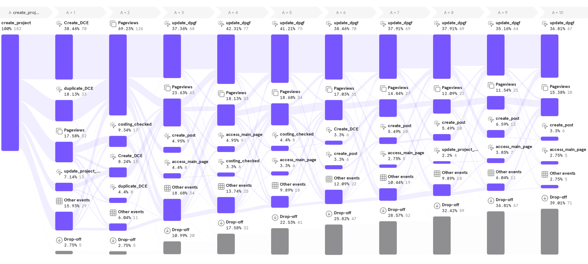
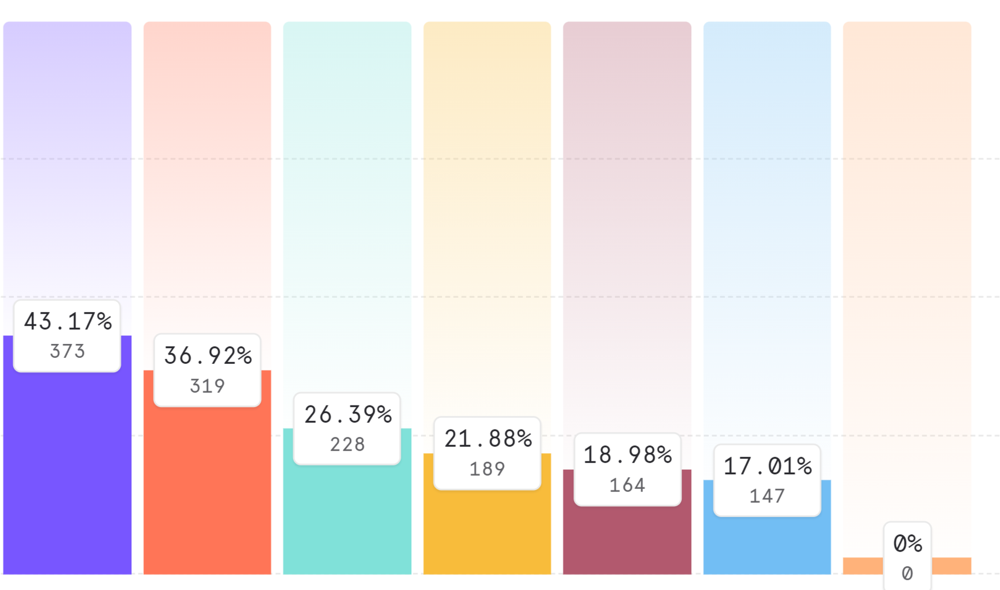
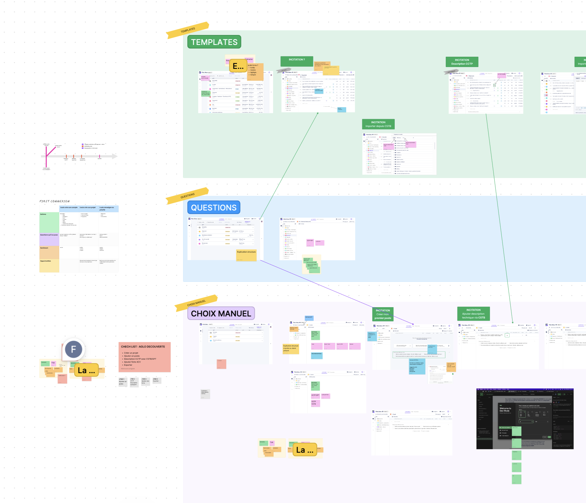
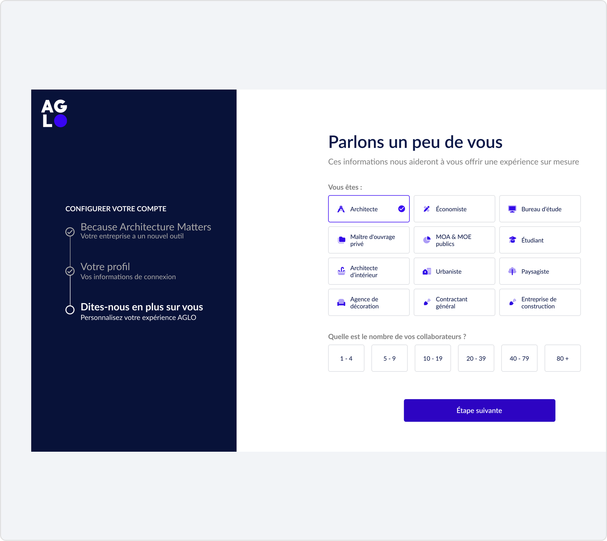
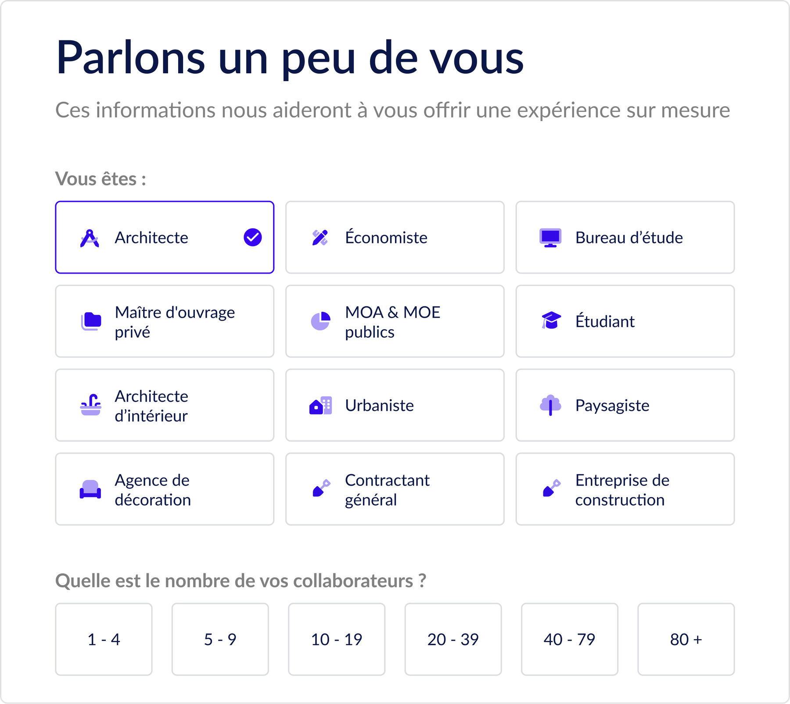
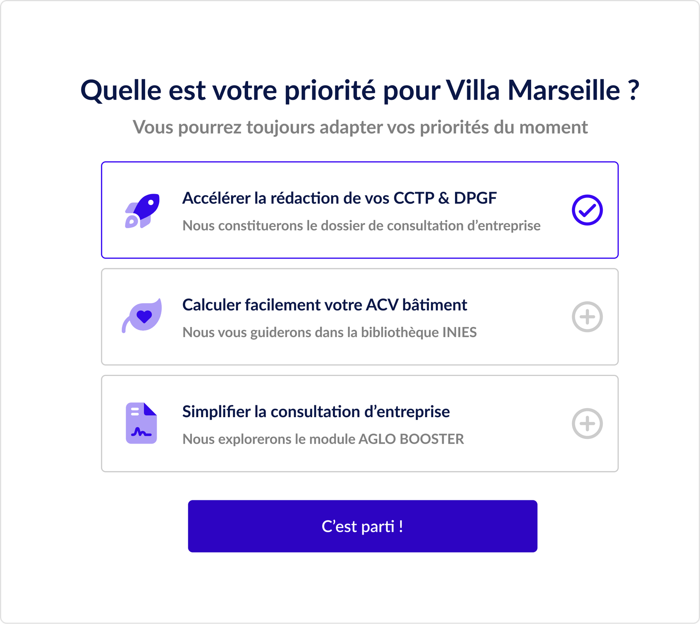
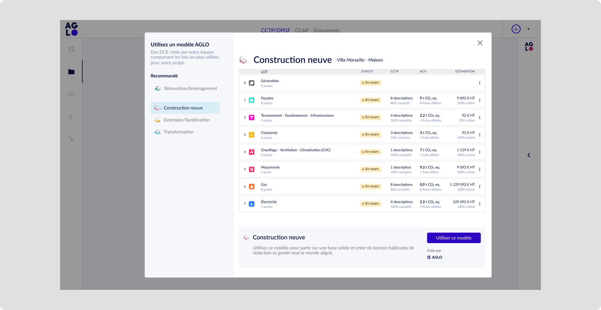
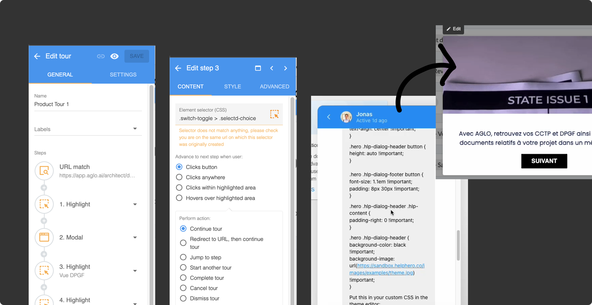
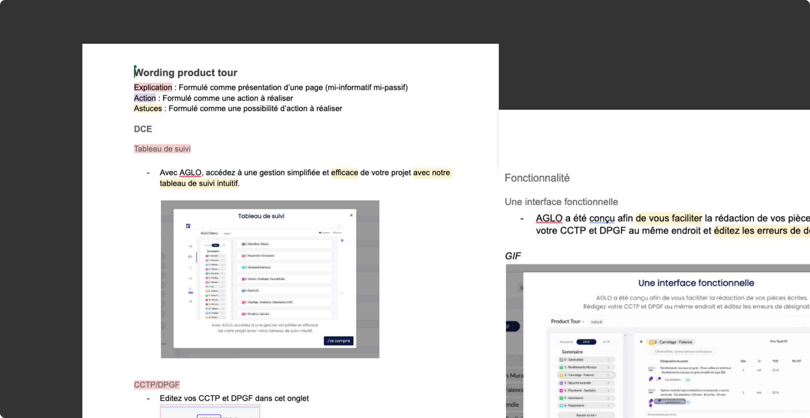

Réduire l'abandon en accélérant la découverte de valeur et en autonomisant l'utilisateur dès la première session.
UX Researcher
UI Designer
Farah Laoud, Product Designer
Louis Bernon, Product Manager


Rapport de flux / comportement des utilisateurs dans les jours suivant la création de compte (Mixpanel).

Rapport d'entonnoir / fonctionnalités les plus engageantes chez les utilisateurs payants.

Story mapping / cartographie complète du parcours et des étapes-jalons, co-construite avec produit et tech.

Configuration du compte / première connexion repensée pour qualifier le métier et le contexte de l'utilisateur.

Ciblage métier / catégorisation fine des profils pour adapter le parcours dès l'entrée.

Priorisation des usages / priorité informelle dès l'entrée pour différencier les parcours selon les besoins réels.

Suppression des écrans vides / templates et questionnaires guidant la rédaction dès la première session.

Product tour / modales, tooltips et hotspots contextuels pour accompagner la découverte (Helphero).

UX writing / conception du wording de bout en bout, relecture croisée avec l'équipe marketing.
Croissance soutenue des créations de DCE sur 20 mois consécutifs suivant le déploiement, signe d'une activation durable, pas d'un pic isolé.